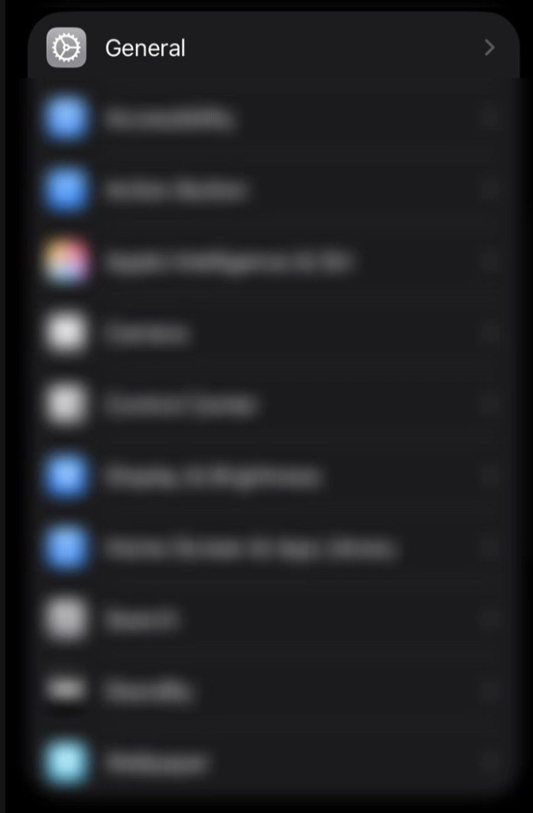
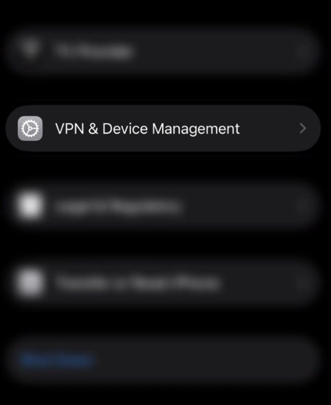

Ad and tracker blocking for your whole iPhone
Quiet DNS changes where your iPhone looks up website names. Ads and trackers get no answer, so they don't load, in Safari and most other apps.
Get started-
Blocks ads and trackers
Ad and tracking websites get no answer, so they never load on your phone.
-
Keeps lookups from your network
Your Wi-Fi network or carrier can't see which websites you look up. AdGuard DNS can.
-
Easy to undo
Remove the profile in Settings and your iPhone goes back to its own DNS.
Quiet DNS is an independent project. It is not affiliated with AdGuard.
Quiet DNS
Quiet DNS is on
Standard filter, HTTPS
Filter
Set up in three steps
- Choose a filter above.
- Tap Save at the bottom of the screen.
- Install the profile in Settings. Show me how
Add Quiet DNS to your Home Screen
Do this once, in Safari. Quiet DNS then opens from its own icon, like an app.
- Tap Share, then View More.
- Tap Add to Home Screen.
- Turn on Open as Web App, then tap Add.
Open Quiet DNS from its icon on your Home Screen from now on. Your filter and settings are there.
Connection
Most people never need to change these.
Profile
- Status
- Server
- Protocol
- Addresses
Fallback is on. If AdGuard DNS can't be reached, lookups aren't encrypted.
What iPhone will show
Profile file
Install Quiet DNS
Three steps, all on your iPhone. You only need them when you first set up, or after you change a setting.
-
Download the profile. Go to Profile and tap Download profile. If Safari asks, tap Allow.
-
Open Settings, tap General, then tap VPN & Device Management. Quiet DNS is listed there.

Settings: tap General. 
General: tap VPN & Device Management. -
Tap Install, enter your passcode, then tap Install again. Tap Done.
iPhone may say the profile is not signed. This profile isn't signed with a certificate, so that label is expected.
Later
- Change a setting
- Change the filter on the home screen, or a setting on the Connection page. Then tap Save and install the new profile. You should still see one Quiet DNS entry.
- Pause
- Switch Quiet DNS off, then install the paused profile. Pausing is new, so check that ads come back afterwards.
- Remove
- Go to Settings, General, VPN & Device Management, tap Quiet DNS, then tap Remove Profile. Your iPhone goes back to its own DNS.
Help
Answers to the questions people ask most.
Some ads still show
Ads served from the same website as the content, such as ads inside a video, can't be blocked by DNS. Most other ads and trackers are blocked.
iPhone says the profile is not signed
This profile isn't signed with a certificate, so iPhone shows that label. It's expected, and it doesn't change what Quiet DNS does.
Devices on my home network stop resolving
While Quiet DNS is on, AdGuard DNS can't see your home network, so names for local devices may stop working. Use their IP addresses instead, or pause Quiet DNS.
I see two Quiet DNS profiles
Older versions used different names. Remove both, then install the profile once.
How do I know it's working?
This website can't check your DNS for you. If Quiet DNS is listed under VPN & Device Management, the profile is installed. Ads should stop showing on most sites.
How do I remove Quiet DNS?
Go to Settings, General, VPN & Device Management. Tap Quiet DNS, then tap Remove Profile.
Still stuck? The Install page has the steps with pictures.
Settings
These change how this website looks and reads. They don't change your iPhone.
Appearance
System follows the appearance setting on your iPhone.
Privacy
What Quiet DNS and this website can see.
- Your network can't see the sites you look up while Quiet DNS is on. AdGuard DNS can. Read AdGuard DNS's privacy policy on its website.
- While Quiet DNS is paused, your network's DNS sees your lookups again.
- The profile is built in your browser. This website has no accounts, no analytics and no ads.
- This website keeps only your appearance choice, your profile-key choice and the settings you last downloaded. They stay in this browser.